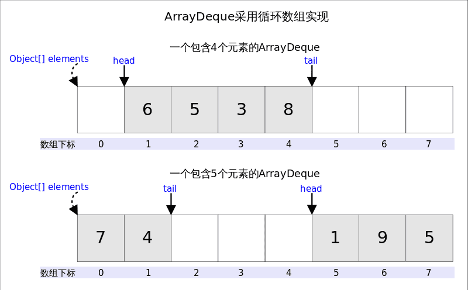

Ch04-Java Collection 之 ArrayDeque
January 31, 2017
Java 里有一个叫做 Stack 的类，却没有叫做 Queue 的类 (它是个接口名字)。当需要使用栈时，Java 已不推荐使用 Stack，而是推荐使用更高效的 ArrayDeque；既然 Queue 只是一个接口，当需要使用队列时也就首选 ArrayDeque 了 (次选是 LinkedList)。
1. 底层数据结构 #
Deque 的含义是“double ended queue”，即双端队列，它既可以当作栈使用，也可以当作队列使用。它基于循环数组实现，也就是说数组的任何一点都可能被看作起点或者终点。ArrayDeque 是非线程安全的 (not thread-safe)，当多个线程同时使用的时候，需要程序员手动同步；另外，该容器不允许放入 null 元素。

head 指向首端第一个有效元素，tail 指向尾端第一个可以插入元素的空位。因为是循环数组，所以 head 不一定总等于 0，tail 也不一定总是比 head 大。
2. 接口定义 #
Deque 是"double ended queue", 表示双向的队列，英文读作"deck". Deque 继承自 Queue 接口，除了支持 Queue 的方法之外，还支持 insert, remove 和 examine 操作，由于 Deque 是双向的，所以可以对队列的头和尾都进行操作，它同时也支持两组格式，一组是抛出异常的实现；另外一组是返回值的实现 (没有则返回 null)。共 12 个方法如下：
| Throws exception(head) | Special value(head) | Throws exception(tail) | Special value(tail) |
|---|---|---|---|
| Insert | addFirst(e) | offerFirst(e) | addLast(e) |
| Remove | removeFirst() | pollFirst() | removeLast() |
| Examine | getFirst() | peekFirst() | getLast() |